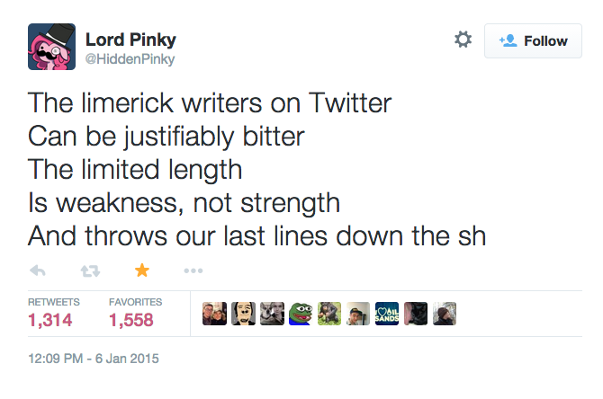

Lessons from the OuLiPo
Computer programmers and OuLiPians write constrained texts. This talk follows the links.
Thomas Guest • wordaligned.org
{ code ~ queneau ~ quine ~ puzzle ~ perec ~ knight ~ knuth ~ tour ~ tag ~ easter ~ egg ~ bug }
OuLiPo & Me
X20
Richard Beard, 1996
{365 × 20 × 10} + {2 × 20} (leap years). Equals exactly 73,040. Plus 17 irregulars. Not give or take, not approximately, but exactly seventy-three thousand and fifty-seven. All the same, it’s difficult to prove.
X20
{365 × 20 × 10} + {2 × 20} (leap years). Equals exactly 73,040. Plus 17 irregulars.
cigarettes_in_pack = x20 = 20
days_in_year = 365
leap_days_in_decade = 2
days_in_decade = 10 * days_in_year + leap_days_in_decade
irregulars = 17
cigarettes_smoked = days_in_decade * x20 + irregulars
assert chapters == x20
assert cigarettes_smoked == word_count
assert sections[chapter] + chapter == x20 + 1
Life A User’s Manual
Georges Perec, 1978
Perhaps the greatest 20th century novel — Donald Knuth
Surreal Numbers
Donald Knuth, 1974

How two ex-students turned on to pure mathematics and found total happiness: a novelette
EODERMDROME
SHOES ON HENS
figs lizards snakes heat light figs snakes light lizards heat figs
OuLiPo & We
OuLiPo
Ouvroir de littérature potentielle
Founded by poet, Raymond Queneau, in Paris, 1960
Primarily mathematicians and writers
Analytic OuLiPo – investigate formal devices used by writers
Synthetic OuLiPo – apply patterns from formal languages such as maths, logic, computer science ... chess!
♞
Deceased members are excused from meetings but are not allowed to withdraw.
♘
{ queneau ~ berge ~ duchamps ~ calvino ~ perec ~ fournel }
Rats who build the labyrinth from which they will try to escape
Cent Mille Milliard de poèmes
Writing is hard!
Why make it harder?
US SPACE TEAM’S UP GOER FIVE

Writing is hard!
Why make it harder?
- Structure
- Comedy
- Accessibility
Writing is hard!
Why make it harder?
- Structure
- Comedy
- Accessibility
- Profit
What’s happening?
(Answers limited to 140 characters)
- no error in the system
- no reror in the system
- no rreor in the system
- no rroer in the system
- no rrore in the system
- no rror ein the system
- no rror ien the system
- no rror ine the system
- no rror in ethe system
- no rror in tehe system
- no rror in thee system
- no rror in the esystem
- no rror in the seystem
- no rror in the syestem
- no rror in the sysetem
- no rror in the systeem
- no rror in the systeem
- no rror in the systeme
- eno rror in the system
- neo rror in the system
- noe rror in the system
- no error in the system
Eugen Gomringer 1969
Writing programs is hard!
Why make it harder?
if
The Rules
integer literals
First, we want to establish the idea that a computer language is not just a way of getting a computer to perform operations but rather that it is a novel formal medium for expressing ideas about methodology. Thus, programs must be written for people to read, and only incidentally for machines to execute.

Writing programs is hard!
Why make it harder?
- ... for machines to execute
2147483647
A Magic Number
Proved a prime by Leonhard Euler

2147483647
INT_MAX
std::numeric_limits<int>::max()
☠
Integers must not exceed this value
We never thought a video would be watched in numbers greater than a 32-bit integer (=2,147,483,647 views), but that was before we met PSY. Gangnam Style has been viewed so many times we had to upgrade to a 64-bit integer (9,223,372,036,854,775,808)!— youtube developers
The UNIX Time-Sharing System
There have always been fairly severe size constraints on the system and its software. Given the partially antagonistic desires for reasonable efficiency and expressive power, the size constraint has encouraged not only economy but a certain elegance of design.
— Dennis Ritchie and Ken Thompson
Small. Fast. Reliable.
Choose any three.

A man, a plan, a canal – Panama!
!amanaP – lanac a ,nalp a ,nam A
A man, a plan, a canoe, pasta, heros, rajahs, a coloratura, maps, snipe, percale, macaroni, a gag, a banana bag, a tan, a tag, a banana bag again (or a camel), a crepe, pins, Spam, a rut, a Rolo, cash, a jar, sore hats, a peon, a canal – Panama!
Le Grand Palindrome
Georges Perec, 1969
Trace l’inégal palindrome. Neige. Bagatelle, dira Hercule. Le brut repentir, cet écrit né Perec. L’arc lu pèse trop, lis à vice-versa. Perte. Cerise ... Désire ce trépas rêvé : Ci va ! S’il porte, sépulcral, ce repentir, cet écrit ne perturbe le lucre : Haridelle, ta gabegie ne mord ni la plage ni l’écart
word count = 1247
Writing is hard!
Why make it harder?
- Structure
- Comedy
- Accessibility
- Profit
- Challenge
[…] Perec’s palindrome barely made sense to the readers. Some teachers took it for the work of an incompetent student, while others suspected that they had been treated to a surrealist text produced by “automatic writing”. Those with psychiatric interests identified the author as an adolescent in a dangerously paranoid state; those who had not forgotten the swinging sixties wondered whether it was LSD or marijuana that had generated the disconnected images of the text. Readers seem to project their own positive and negative fantasies onto Perec’s palindrome, as they do onto other difficult, obscure and unattributed works.
— David Bellos, Georges Perec: a Life in Words
20:02 20/02 2002
Peter Norvig
A man, a plan, a caddy, Ore, Lee, tsuba, Thaine, a lair, ..., Hell, a burial, Aeniah, Tabu, Steele, Roydd, a canal, Panama
word count = 15139
Norvig’s Palindrome Finder
def consider_candidates(self):
"""Push a new state with a set of candidate words onto stack."""
if self.diff > 0: # Left is longer, consider adding on right
dir = 'right'
substr = self.left[-1][-self.diff:]
candidates = self.dict.endswith(substr)
elif self.diff < 0: # Right is longer, consider adding on left
dir = 'left'
substr = reversestr(self.right[-1][0:-self.diff])
candidates = self.dict.startswith(substr)
else: # Both sides are same size
dir = 'left'
if not self.used_reversibles:
self.add_reversibles()
substr = ''
candidates = self.dict.startswith('')
if substr == reversestr(substr):
self.report()
self.stack.append(('trying', dir, substr, candidates))
Writing programs is hard!
Why make it harder?
- ... So machines can execute them
- Challenge
- Education
Algol Poetry – Noël Arnaud, 1968
Table
Begin: to make format,
go down to comment
while channel false
(if not true). End.
Black Perl
BEFOREHAND: close door, each window & exit; wait until time.
open spellbook, study, read (scan, select, tell us);
write it, print the hex while each watches,
reverse its length, write again;
kill spiders, pop them, chop, split, kill them.
unlink arms, shift, wait & listen (listening, wait),
sort the flock (then, warn the "goats" & kill the "sheep");
kill them, dump qualms, shift moralities,
values aside, each one;
die sheep! die to reverse the system
you accept (reject, respect);
next step,
kill the next sacrifice, each sacrifice,
wait, redo ritual until "all the spirits are pleased";
do it ("as they say").
do it(*everyone***must***participate***in***forbidden**s*e*x*).
return last victim; package body;
exit crypt (time, times & "half a time") & close it,
select (quickly) & warn your next victim;
AFTERWARDS: tell nobody.
wait, wait until time;
wait until next year, next decade;
sleep, sleep, die yourself,
die at last
# Larry Wall, 1990
⸮⸮ International Obfuscated C Code Contest ??
/*(c) 2001 Thad */ #include<string.h> #include <stdio.h> #define abc stdout int main(int a,ch\ ar*b){char*c="??=" "??(??/??/??)??'{" "??!??>??-";while( !((a=fgetc(stdin)) ==EOF))fputc((b=s\ trchr(c,a))?fputc( fputc(077,abc),abc ),"=(/)'<!>""-"??( b-c??):a, abc);??>
Perec
Georges Perec, 1936 – 1982
parents died in World War II
won Prix Renaudot in 1965 for his first novel, Les Choses
archivist, 1961 – 1978
chess player
cruciverbist
genius
OuLiPian 1967 –
Perec in the Lab
Designed and and managed a scientific database for the Laboratoire de Physiologie at the Centre Hospitalier et Universitaire Saint-Antoine.
La Disparition
1969
This book avoids using a particular symbol. How crazy is that? Author GP must adapt sounds and jump through hoops to finish this book. Such a constraint constructs an unusual story about a group of humans looking for a missing companion, Anton Vowl. I could try and go on ...
✂ ✂ ✂ ✂ ✂ ✂ ✂
8<--8<--8<--8<--8<--8<--8<--8<--
Lipogram
Writing is hard!
Why make it harder?
- Structure
- Comedy
- Accessibility
- Profit
- Challenge
- Inspiration
Life A User’s Manual
11 rue Simon Crubellier
8pm, June 23, 1975
Knight’s Tour
On an 8 × 8 board, there are 26,534,728,821,064 directed closed tours.
11 rue Simon Crubellier
8pm, June 23, 1975
Easter Egg
The woman carries in her right hand a bulky set of keys, no doubt the keys of all the flats she has visited that day; some are fixed to novelty key rings: a miniature bottle of Marie Brizard apéritif, a golf tee and a wasp, a double-six domino, and a plastic octagonal token in which is set a tuberose flower.
Easter Egg
When writing a specialization, be careful about its location; or to make it compile will be such a trial as to kindle its self-immolation.
Clinamen
On the Nature of Things
Lucretius, 99-55 BC
When atoms move straight down through the void by their own weight, they deflect a bit in space at a quite uncertain time and in uncertain places, just enough that you could say that their motion has changed. But if they were not in the habit of swerving, they would all fall straight down through the depths of the void, like drops of rain, and no collision would occur, nor would any blow be produced among the atoms. In that case, nature would never have produced anything.
Rules for Use
The clinamen can be used freely anywhere it isn’t required. According to Calvino it is the only device that “can make the text a true work of art”.
References
- Life A User’s Manual, Georges Perec
- Georges Perec: A Life in Words, David Bellos
- X20, Richard Beard
- Oulipo Compendium, Harry Matthews
{ END ~ CODE ~ ONCE }